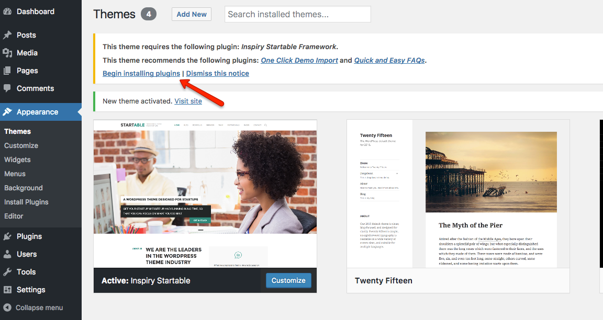
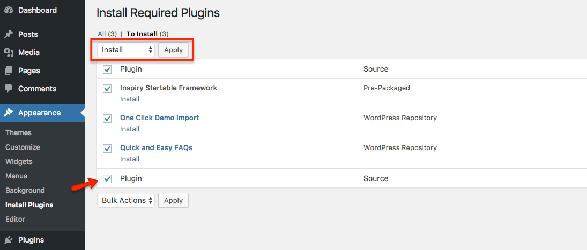

Introduction
Thanks for purchasing Startable theme. If you have any question that is beyond the scope of this documentation, Feel free to ask that on our support website. You can visit this knowledge base article to learn about how to get item purchase code from themeforest.net to sign-up on our support site.
Important Note
It is highly recommended to use child theme, So that you can easily update parent theme whenever a new update becomes available. A pre-built ready to use child theme is included in the main theme pack that you might have downloaded from themeforest.
How to Update Theme
If you want to update your theme then you can consult Update Theme Using Envato WordPress Toolkit knoweldge base article for auto update OR you can consult Better Way to Update WordPress Theme knowledge base article for manual update.
Support Policy
Support Includes- Answering technical questions about theme features.
- Assistance with reported bugs and issues.
- Help with included 3rd party assets.
- Theme customization services.
- Theme installation services.
Install Theme
To start you must have a working version of WordPress. Almost all major web hosts provides one click WordPress install and you can consult your host's help site for more information in this regard. For manual install you can consult WordPress Codex Installing WordPress.
Once you have a working version of WordPress, You need to download "All Files and Documentation" from themeforest download page and extract the downloaded zip to get various files including inspiry-startable.zip.
{kind=link}
Install Theme Via WordPress Dashboard ( Recommended Way )
- Go to 'Appearance > Themes' section
- Click 'Add New' and select the 'Upload Theme' option
- Click 'Upload Theme'

- Choose the inspiry-startable.zip file and press 'Install Now'

- Once the theme is uploaded you need to activate it.

- After activation click on the 'Being activating plugin' button to install Inspiry Startable Framework plugin (required).
 - Check the Inspiry Startable Framework plugin box, select 'Active' action and apply.
 - After activation go to "Appearance > Customize" to play with theme's settings.

if you face any problem during upload through dashboard, please upload the theme using FTP as guided below.
Install Theme Via FTP ( Alternative Way )
- Access your hosting server using an ftp client like FileZilla
- Go to the 'wp-content/themes' folder of your WordPress installation
- Extract the inspiry-startable.zip file and put the inspiry-startable folder in 'wp-content/themes/' folder
- Go to 'WordPress Dashboard > Appearance > Themes' section to activate the theme
- After activation go to "Appearance > Customize" to play with theme's settings.
Install Child Theme ( Highly Recommended )
It is highly recommended to use child theme, So that you can easily update parent theme whenever a new update becomes available. A pre-built ready to use child theme is included in the main theme pack that you have downloaded from themeforest.
To install child theme, You need to upload the inspiry-startable-child.zip and activate it in the same way as you have uploaded and activated parent theme's inspiry-startable.zip.
Next Step is to Import Demo Contents
Create Home & News Pages
In case of Demo Contents Import the home page and news page are already created and you do not need to follow this section.
Create Home Page
To create Home page you need to create a new page, Go to Pages > Add New. You can give this page a title "Home" yet you do not need to include any contents for now. Select the “Home” template from the Page Attributes section, as displayed in the screen shot below and click “Publish”.

Create News Page
To create News page you need to create a new page, Go to Pages > Add New. You can give this page a title "News" yet you do not need to include any contents. Select the “Default Template” template from the Page Attributes section and click “Publish”.
Configure Reading Settings
Now you need to configure reading settings, Go to WordPress Admin > Settings > Reading and choose the front page displays as static page. Then select Home as Front Page and News as Posts Page. As, displayed in the screen shot below.
Configure Pretty Permalinks
To configure pretty permalinks, Go to WordPress Admin > Settings > Permalinks and change it as displayed in the screen shot below.

Configure Primary Menu
Navigate to Appearance > Menus and create a new menu with any name you like. Assign the newly created menu to theme location "Primary Menu" from Menu Settings section below menu. After that save the menu. As pointed in the screen shot below.
Add News Post
Go to WordPress Admin > Posts > Add New- Provide the post title
- Provide the post contents

- Add or select the related category

- Add or select the related tags

-
Provide the featured image. The image should have minimum width of 750px and minimum height of 393px. The bigger size images will be cropped automatically.
- Publish the post once it is ready.
Add Portfolio Post
Go to WordPress Admin > Portfolio > Add New- Provide the portfolio title
- Provide the portfolio contents
- Add or select the portfolio item types

- Add portfolio item details

-
Provide the portfolio item featured image. The image should have minimum width of 1100px and minimum height of 480px. The bigger size images will be cropped automatically.
- Publish the portfolio item post once it is ready.
Configure Header
Navigate to Appearance > Customize and look into Site Identity and Header section to explore further settings.
Site Identity
You can upload your site's logo, title, description tag and site icon from this section.
Header
You can customize header related settings in header section. As displayed in screenshot below.

Configure Footer
Navigate to Appearance > Customize > Footer and look into Basic, Contact Us and Google Map section to explore further settings.

Basic Settings
You can Enable/Disable the Scroll to Top Button from this section.

Google Map
You can configure Footer Google Map related settings in this section. As displayed in screenshot below.

Contact Us
You can configure Footer Contact Us related settings in this section. As displayed in screenshot below.

Create Portfolio Page
In case of Demo Contents Import the portfolio page is already created and you do not need to follow this section.
To create Portfolio page you need to create a new page, Go to Pages > Add New. You can give this page a title "Portfolio" yet you do not need to include any contents for now. Select the “Portfolio” template from the Page Attributes section, as displayed in the screen shot below and click “Publish”.
Create Services Page
In case of Demo Contents Import the services page is already created and you do not need to follow this section.
To create Portfolio page you need to create a new page, Go to Pages > Add New. You can give this page a title "Services" yet you do not need to include any contents for now. Select the “Services” template from the Page Attributes section, as displayed in the screen shot below and click “Publish”.

Create Team Page
In case of Demo Contents Import the team page is already created and you do not need to follow this section.
To create Portfolio page you need to create a new page, Go to Pages > Add New. You can give this page a title "Team" yet you do not need to include any contents for now. Select the “Team” template from the Page Attributes section, as displayed in the screen shot below and click “Publish”.

Create Testimonial Page
In case of Demo Contents Import the testimonial page is already created and you do not need to follow this section.
To create Portfolio page you need to create a new page, Go to Pages > Add New. You can give this page a title "Testimonials" yet you do not need to include any contents for now. Select the “Testimonials” template from the Page Attributes section, as displayed in the screen shot below and click “Publish”.
Create Contact Page
In case of Demo Contents Import the contact page is already created and you do not need to follow this section.
To create Portfolio page you need to create a new page, Go to Pages > Add New. You can give this page a title "Contact" yet you do not need to include any contents for now. Select the “Contact” template from the Page Attributes section, as displayed in the screen shot below and click “Publish”.